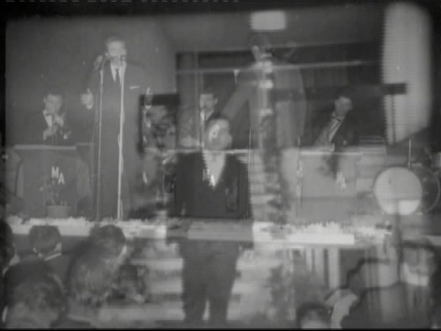
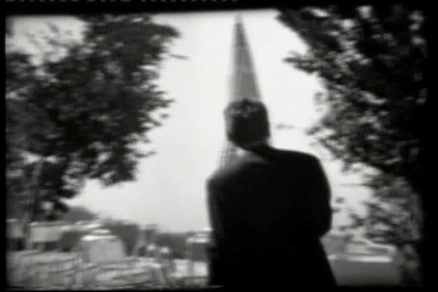
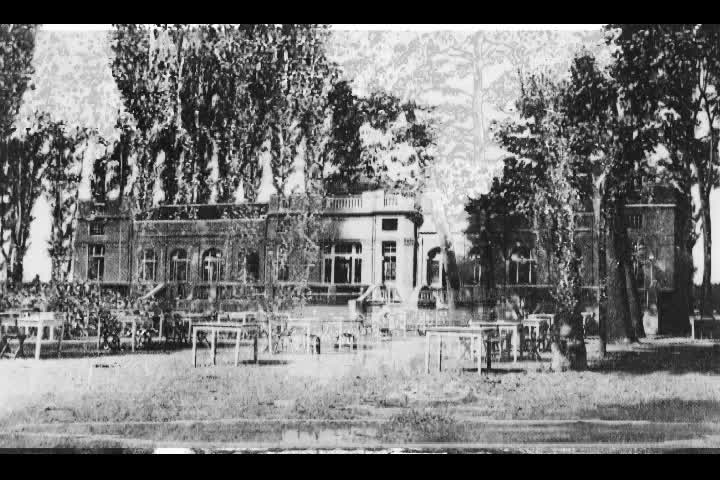

Сигнал
Прецизен каталог, архивски ID, потекло, права, јазични верзии и јасна структура. Ништо важно не се губи во хаос.
01 ДИГИТАЛНА СЦЕНА · КНИГА · ГЛАС · СЛИКА
Уникатна дигитална куќа за авторското дело на Саздо Станојковиќ-Сашо и музичкото наследство на Миодраг Станојковиќ-Попац. Конципирана како спој на инженерска прецизност, режисерски ритам и човечка меморија.
КОНЦЕПТ / THE CREATIVE CIRCUIT
Сале не го претставуваме само како автор на книги. Визуелниот јазик на платформата ја следи неговата двојност: техничка дисциплина од електроинженерството и уметнички, режисерски начин на гледање на животот.
Прецизен каталог, архивски ID, потекло, права, јазични верзии и јасна структура. Ништо важно не се губи во хаос.
Фотографијата, книгата, песната и видеото не се само датотеки. Тие се сцени од еден живот, поставени со ритам и драматургија.
Архивата е направена да остане: семејна меморија, авторско дело и музичко наследство поврзани во една контролирана целина.
„Времето поминува, но вистината останува.“



НАСЛЕДСТВО / LEGACY
Ова е просторот на гласот: песни, настапи, ТВ снимки, фотографии, плакати, документи и семејни сведоштва. Биографските факти се објавуваат постепено, само по потврда од семејната архива или проверлив извор.
Види ги архивските снимки →АВТОРСКА БИБЛИОТЕКА
Првите четири наслови имаат сопствени MK/EN страници, оригинални корици и internet-preview PDF материјали. Останатите записи се чуваат како библиографски места додека не стигнат целосни авторски материјали.
SOUND ARCHIVE
Песните ќе имаат сопствен player, метаподатоци, автори, година, извор и статус на права. Архивата е подготвена за MP3/WAV или официјални надворешни извори.
SCREENING ROOM
Локални архивски снимки, Facebook и YouTube записи на едно место. YouTube видеата се вчитуваат дури по клик, за побрза и почиста страница.
PHOTO ARCHIVE
Портрети, сцена, семејни моменти, документи и ретки архивски кадри. Секоја слика добива свој ID, опис, датум, место и статус на права кога информациите ќе бидат потврдени.
ARCHIVE CONTROL ROOM
Од каде доаѓа оригиналот и кој го доставил.
Датум, место, повод, учесници и верзија.
Автор, носител, дозвола и јавен статус.
Еден канонски запис; дупликатите не ја загадуваат архивата.
SUPPORT THE ARCHIVE
Книги, идни официјални видео-канали, лиценцирање на архивски материјал и поддршка од публика - но секогаш под контрола на Саздо или овластениот носител на правата. Дигиталните изданија, кога ќе се активираат, ќе се испорачуваат како индивидуално лиценцирани дигитални копии со уникатен идентификатор.
CONTACT / RIGHTS / CONTRIBUTIONS
Архивата расте само со проверлив контекст. За книги, дополнување на архивата, медиумски барања и права: